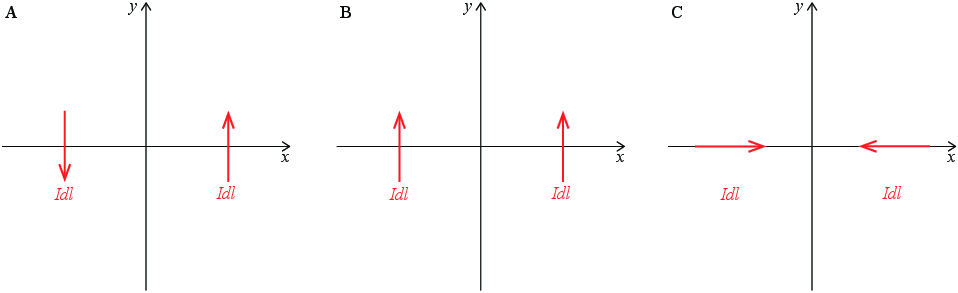

Figuren viser systemer hvor det er to strøm-elementer.

a) For system A, hva blir retningen på det magnetiske feltet i punktet midt mellom elementene?
b) Strøm-elementer kan ikke eksistere alene for et stasjonært system. Hvordan tenker du det er mest naturlig å tegne en hel krets på hvor de to strøm-elementene i system A inngår?
F.eks. en sirkel rundt midtpunktet mellom de to elementene. (Det finnes mange løsninger!)
c) For system B, hva blir retningen på det magnetiske feltet i punktet midt mellom elementene?
d) Kan du tegne inn en eller flere kretser hvor de to strøm-elementene i system B inngår på en slik måte at det ikke endrer svaret ditt? Det finnes flere ganske forskjellige løsninger - kan du finne mer enn en?
En løsning er å forlenge hvert element til en uendelig lang linje. Kan du finne en annen løsning?
e) For system C, hva blir retningen på det magnetiske feltet i punktet midt mellom elementene?
\( 0 \)
f) (Litt vanskelig - kan hoppes over) Kan du tegne inn en eller flere kretser hvor de to strøm-elementene inngår slik at det ikke endrer på svaret ditt?
Vi utvider hver av de to kretsene til kvadratiske eller rektangulære kretser med sidekant lik strøm-elementet. Sjekk at dette faktisk gir samme felt i punktet midt mellom strøm-elementene.